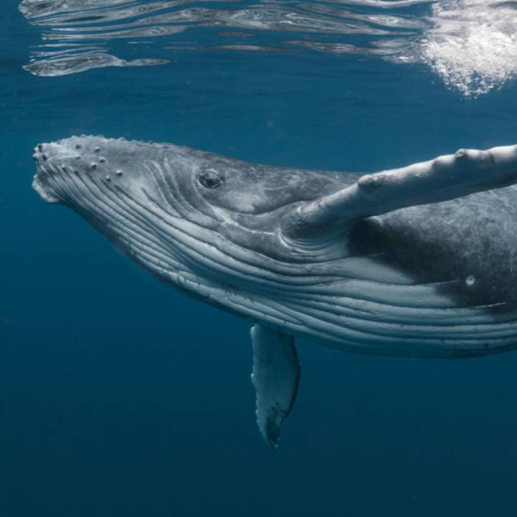
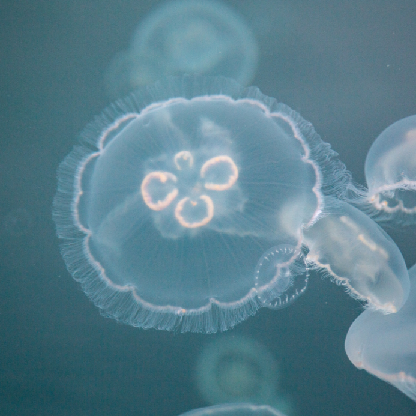
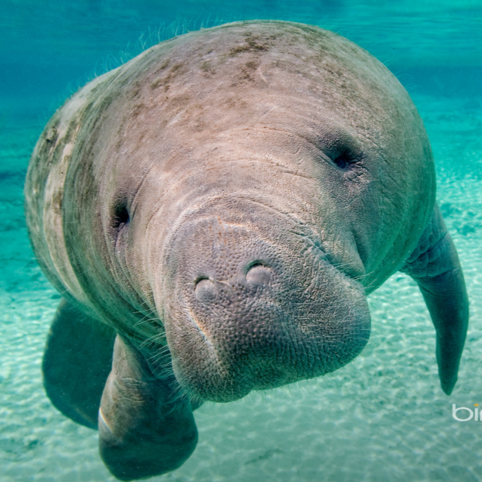

Nombre común: Nutria
Nombre científico: Lutra lutra (nutria europea; existen otras especies como Lontra canadensis)
Familia: Mustelidae
Dieta: Carnívora (peces, crustáceos, anfibios)

Nombre común: Ballena
Nombre científico: depende de la especie; ejemplo: Balaenoptera musculus (ballena azul)
Familia: Balaenopteridae (para ballenas barbadas como la azul; otras familias incluyen Physeteridae para cachalotes)
Dieta: Depende de la especie:
Ballenas barbadas: filtran krill y pequeños peces -> básicamente carnívoras
Ballenas dentadas: pescado y calamares -> también carnívoras

Nombre común: Medusa
Nombre científico: depende de la especie, un ejemplo común es Aurelia aurita (medusa común o medusa luna)
Familia: Ulmaridae (para Aurelia aurita; otras especies pertenecen a diferentes familias como Cyaneidae, Pelagiidae, etc.)
Dieta: Carnívora (se alimenta de plancton, pequeños peces y larvas marinas usando sus tentáculos urticantes)

Nombre común: Manatí
Nombre científico: Trichechus manatus (manatí antillano; existen otras especies como Trichechus inunguis y Trichechus senegalensis)
Familia: Trichechidae
Dieta: Herbívoro (principalmente plantas acuáticas y algas)

Nombre común: Tiburón
Nombre científico: Carcharodon carcharias (tiburón blanco; existen más de 500 especies)
Familia: Varia según especie, por ejemplo Lamnidae (tiburón blanco)
Dieta: Carnívora (peces, mamíferos marinos, moluscos, plancton según la especie)